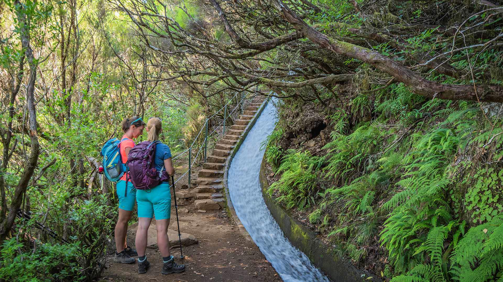

💧
Levada das 25 Fontes
Uma das levadas mais famosas da Madeira, com cerca de 4.6 km de extensão. O percurso leva até uma lagoa impressionante com 25 nascentes de água, rodeada por vegetação luxuriante. Dificuldade: média.